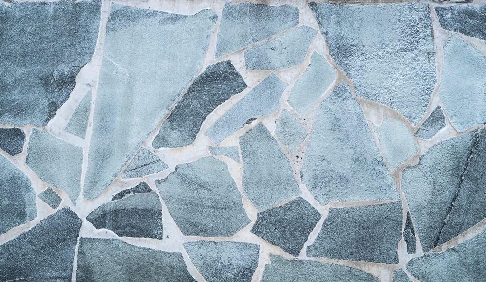

Referenser
Ett urval av uppdrag vi har utfört.
- 2026

Lojsta prästgård
Cementputs bortknackad och ersatt med luftkalkbruk och gul kalkfärg.
- 2026

Norrbys lada
Nytt spån på norrsidan och två strykningar tjära på hela taket.
- 2025

Ringmursgården
Gårdshus från 1700-talet med 32 renoverade bågar och linoljemålad panel.
- 2025

Sudrets kyrka
Invändig kalkning av långhus och kor under antikvarisk medverkan.
- 2024

Hamnmagasinet
Kalkputs på gavlarna och linoljemålade portar i engelskt rött.
- 2027

Stenhuset i Gammelgarn
Planerad omputsning av ett stenhus från 1820 – arbetsbeskrivning klar.
Husägare och antikvarier om oss
Kyrkorådet · Lojsta”Ingrid hittade husets ursprungliga ockra under fyra lager cementfärg. Nu ser prästgården ut som på fotot från 1910.”
Annika och Lars B. · Gammelgarn”De var tydliga med att kalk behöver bättras oftare än plastfärg. Det uppskattade vi – och muren slutade fukta direkt.”
Antikvarie, Gotlands stiftskansli · Visby”Dokumentationen från kyrkan var den bästa vi har fått från en entreprenör.”